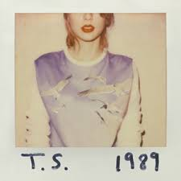

Album Terfavorit Swifties

Folklore
Album penuh cerita dan imajinasi, menunjukkan sisi tenang dan reflektif dari Taylor.

1989
Transformasi pop yang ikonik, dengan lagu-lagu seperti “Style” dan “Blank Space”.

Red (Taylor’s Version)
Perpaduan emosional antara pop dan country, kini dengan versi yang dimiliki penuh oleh Taylor.